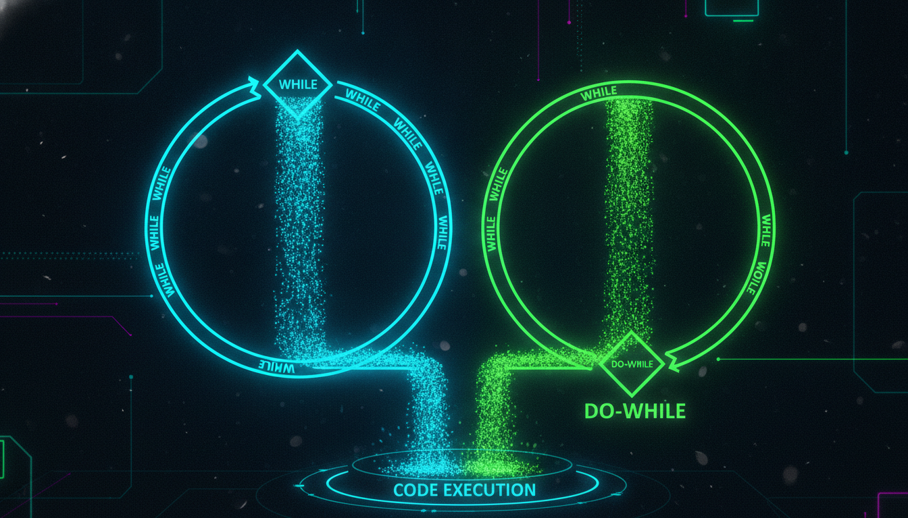

Цикли з передумовою та післяумовою, нескінченні цикли

Цикл while виконує тіло циклу ПОКИ умова істинна. Умова перевіряється ПЕРЕД кожною ітерацією.
// Синтаксис:
while (умова) {
// тіло циклу
}
// Приклад:
#include <iostream>
int main() {
int i = 0;
while (i < 10) {
std::cout << i << " ";
i++;
}
// Виведе: 0 1 2 3 4 5 6 7 8 9
return 0;
}Цикл do-while гарантує виконання тіла хоча б один раз. Умова перевіряється ПІСЛЯ ітерації.
// Синтаксис:
do {
// тіло циклу
} while (умова);
// Приклад:
#include <iostream>
int main() {
int choice;
do {
std::cout << "1. Продовжити" << std::endl;
std::cout << "0. Вихід" << std::endl;
std::cout << "Ваш вибір: ";
std::cin >> choice;
} while (choice != 0);
return 0;
}| Критерій | while | do-while |
|---|---|---|
| Перевірка умови | Перед ітерацією | Після ітерації |
| Мінімум ітерацій | 0 | 1 |
| Використання | Загальне | Меню, введення даних |
// Гра "Вгадай число"
#include <iostream>
#include <cstdlib>
#include <ctime>
int main() {
srand(time(0));
int secret = rand() % 100 + 1;
int guess, attempts = 0;
std::cout << "Вгадайте число від 1 до 100!" << std::endl;
do {
std::cout << "Ваш варіант: ";
std::cin >> guess;
attempts++;
if (guess > secret) {
std::cout << "Занадто багато!" << std::endl;
} else if (guess < secret) {
std::cout << "Занадто мало!" << std::endl;
}
} while (guess != secret);
std::cout << "Вітаємо! Ви вгадали за " << attempts << " спроб!" << std::endl;
return 0;
}
// Обчислення НСД (найбільшого спільного дільника)
#include <iostream>
int main() {
int a, b;
std::cout << "Введіть два числа: ";
std::cin >> a >> b;
while (b != 0) {
int temp = b;
b = a % b;
a = temp;
}
std::cout << "НСД = " << a << std::endl;
return 0;
}
// Перетворення десяткового числа в двійкове
#include <iostream>
#include <string>
int main() {
int n;
std::string binary = "";
std::cout << "Введіть число: ";
std::cin >> n;
while (n > 0) {
binary = std::to_string(n % 2) + binary;
n /= 2;
}
std::cout << "Двійкове: " << binary << std::endl;
return 0;
}